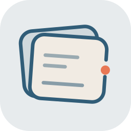
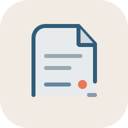
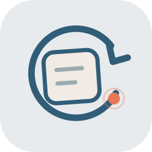
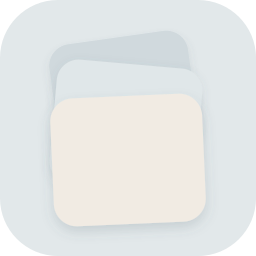
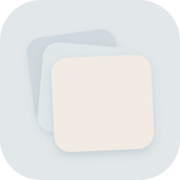
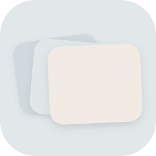

A · 未封口的记忆卡片
两张错位叠放的卡片，前卡刻意留出的开口对应“未完成”，橙色点是等待补上的线索。
UNFINISHED · ICON STUDY 01
六个版本都沿用首页的卡片语言与冷静配色，重点比较它们在启动器小尺寸下的识别度，以及与“留下、添加线索、封存”这条产品叙事的贴合程度。

两张错位叠放的卡片，前卡刻意留出的开口对应“未完成”，橙色点是等待补上的线索。

更像一张被暂存的纸条，折角和断开的底线传达“还没写完”，气质安静、偏编辑感。

开放的回环像“想起—补充—再想起”的循环，最抽象，也最适合做极简品牌符号。

完全抽取首页三张卡片的上下错位关系与三种底色；把旋转角度放大，并用很轻的外部阴影拉开层级，不加边框、文字或额外符号。

这次只增加左右露边，上下位置保持 D2 原来的关系，让三张卡片有呼吸感又不变成长条形。

保留三张卡片的上下重叠和原有层级，但把主要错位改为左右展开，让每张卡片的侧边都能被看见。